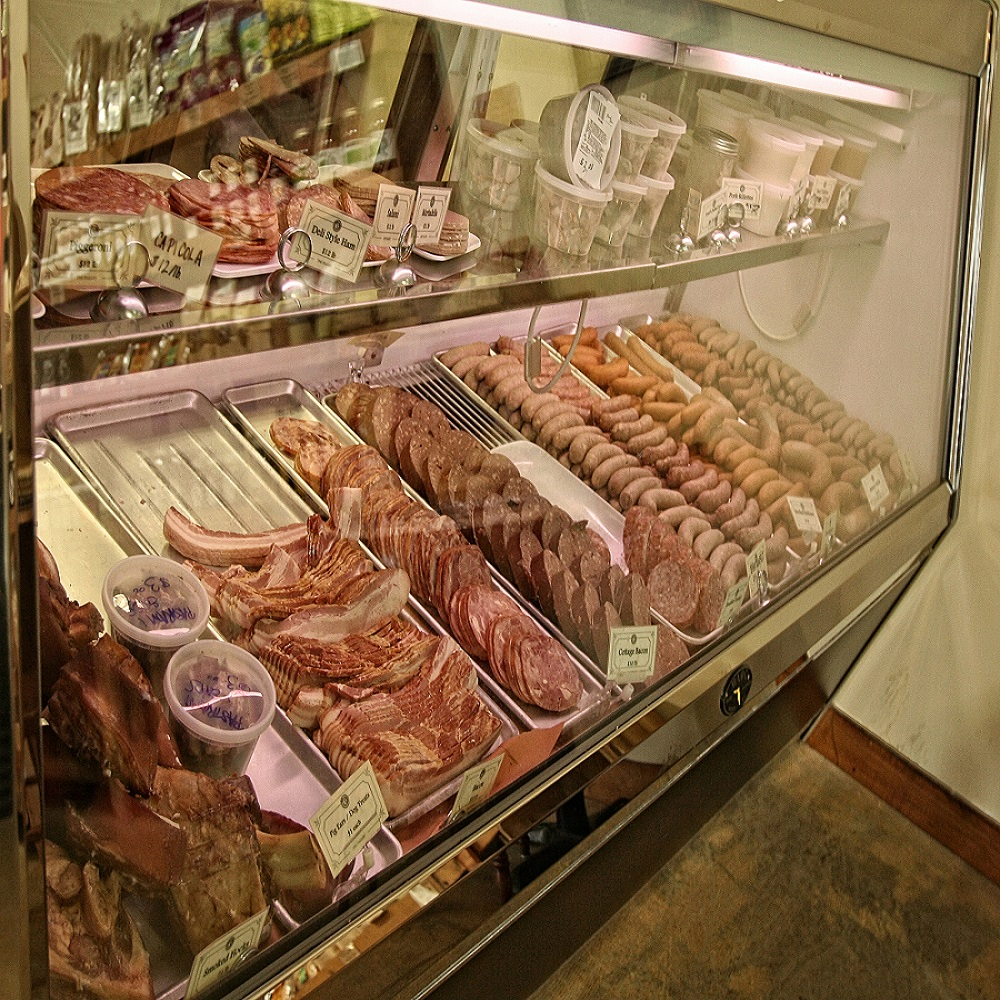

Come visit our butcher shop & local grocer in downtown Ithaca. Our meat counter features fresh cuts of pork, beef, and chicken, as well as a full line of charcuterie and deli meat. This includes our thick-sliced bacon, deli ham, pastrami, piggery paté, kielbasa, andouille, bratwurst, and much much more! We also offer many different types of fresh seasonal sausages, in addition to many weekly staples like our garlicky ‘T-burg Griller’ and our chorizo Mexicano.
Looking for baking lard? We got it. Want rosemary & black peppercorn brined pork chops? You didn’t think you did, but you are now. We have three meat cases of specialty items to choose from.
Local pasta, vegetables, canned goods, & dairy can also be found on our shelves. Come on in and see what we have in store for you!
We strive to give you the best selection at competitive prices with knowledgeable butchers who can help answer any question. Stop on in at any time to shop or just to admire our beautiful meat case!
